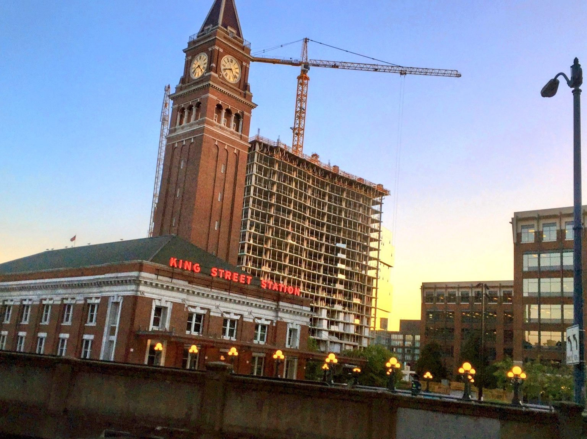

2B518C0C-1396-487E-9D73-A736C68F9958.jpeg
Multi-LLM Analysis
68.5/100
Consensus Score
Original Review
The photograph captures beautiful twilight gradients, but the severe angle tilt is immediately distracting. Straightening the horizon and reducing the low-light sensor noise will greatly improve the professional quality of the architectural capture.
- Rotate the image clockwise by approximately 6 degrees to straighten the significant vertical tilt of the clock tower
- Crop the bottom 15% of the frame to remove the dark, distracting concrete wall foreground
- Crop the right edge slightly to eliminate the intrusive street lamp post
Analysis failed: Error code: 400 - {'error': {'message': "Unsupported parameter: 'max_tokens' is not supported with this model. Use 'max_completion_tokens' instead.", 'type': 'invalid_request_error', 'param': 'max_tokens', 'code': 'unsupported_parameter'}}
The image captures an interesting urban development scene with good subject matter and golden hour lighting. However, the underexposed foreground and centered composition diminish impact. The sunset provides beautiful natural light that needs enhancement through post-processing to reveal architectural details and create better tonal balance between the historic station and modern construction.
- Increase overall exposure by 15-20% to recover shadow detail in the buildings and foreground
- Boost vibrance by 25-30% to enhance the warm sunset tones and make the red 'KING STREET STATION' sign more prominent
- Apply graduated filter to brighten the lower third of the image while preserving the sky gradient
Combined Improvements Applied:
- Rotate the image clockwise by approximately 6 degrees to straighten the significant vertical tilt of the clock tower
- Crop the bottom 15% of the frame to remove the dark, distracting concrete wall foreground
- Crop the right edge slightly to eliminate the intrusive street lamp post
- Apply luminance noise reduction to smooth out the grain visible in the sky and darker areas
- Increase shadow exposure by roughly 20% to reveal details in the brick façade of the station
- Increase overall exposure by 15-20% to recover shadow detail in the buildings and foreground
- Boost vibrance by 25-30% to enhance the warm sunset tones and make the red 'KING STREET STATION' sign more prominent
- Apply graduated filter to brighten the lower third of the image while preserving the sky gradient
- Shift composition to place the clock tower at the right third intersection following rule of thirds, eliminating excess right-side space
Before & After Comparison